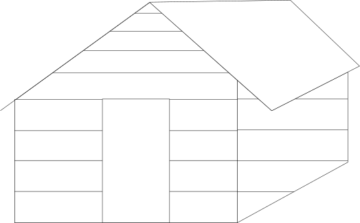

My website is a treehouse
Switch
Scape
Garden
Motion
Build
Story
Sounds
Paths
A degree project
⌛
Theia Flynn
My website is a treehouse / ; / is a way to present a space on the web that is part of an installation / ; /
My website is a treehouse / ; / is a way to present a space on the web with different interactions / ; /
My website is a treehouse / ; / is a way to present a space on the web that embraces jank / ; /
My website is a treehouse / ; / is a way to present a space on the web that is handmade for JR / ; /
My website is a treehouse / ; / is a way to present a space on the web that is not so efficient / ; /
My website is a treehouse / ; / is a way to present a space on the web that is harcoded / ; /
My website is a treehouse / ; / is a way to present a space on the web that would like to be playful / ; /
My website is a treehouse / ; / is a way to present a space on the web that ends up being quite calm / ; /
My website is a treehouse / ; / is a way to present a space on the web that anyone can make / ; /
My website is a treehouse / ; / is a way to present a space on the web that is a work in progress / ; /
My website is a treehouse / ; / is a way to present a space on the web that is up simply / ; /
My website is a treehouse / ; / is a way to present a space on the web that is feeling sleepy / ; /
My website is a treehouse / ; / is a way to present a space on the web where / . / can hear birds sing / ; /
My website is a treehouse / ; / is a way to present a space on the web that wants a story / ; /
My website is a treehouse / ; / is a way to present a space on the web like a dead end / ; /
My website is a treehouse / ; / is a way to present a space on the web that likes hardly-poetry / ; /
My website is a treehouse / ; / is a way to present a space on the web that / . / might land on once / ; /
My website is a treehouse / ; / is a way to present a space on the web that / . / might stay on / ; /
My website is a treehouse / ; / is a way to present a space on the web that needs resolution / ; /
My website is a treehouse / ; / is a way to present a space on the web that doesn't need resolution / ; /
My website is a treehouse / ; / is a way to present a space on the web that wants different interfaces / ; /
My website is a treehouse / ; / is a way to present a space on the web that can be broken / ; /
My website is a treehouse / ; / is a way to present a space on the web that can be fixed / ; /
My website is a treehouse / ; / is a way to present a space on the web where / . / invited / . / / ; /
My website is a treehouse / ; / is a way to present a space on the web made up entirely of vectors / ; /
My website is a treehouse / ; / is a way to present a space on the web that has no inherent function / ; /
My website is a treehouse / ; / is a way to present a space on the web that is made up of found bits / ; /
My website is a treehouse / ; / is a way to present a space on the web where things are slow / ; /
My website is a treehouse / ; / is a way to present a space on the web try the arrows keys / ; /
My website is a treehouse / ; / is a way to present a space on the web that has nowhere to hide / ; /
My website is a treehouse / ; / is a way to present a space on the web that says hello / ; /
My website is a treehouse / ; / is a way to present a space on the web with suboptimal games / ; /
My website is a treehouse / ; / is a way to present a space on the web with an upward leanring curve / ; /

There is something nerve-wracking about publishing subpar code; code that is without a doubt not optimized, not finished, not necessarily advanced.
1. My website is a treehouse, is a metaphor I decided to use to talk about this type of code. Spaces that point to something larger but remain small.
2. Up, hardly connected, hardly accessible, unless invited. But here I hold a ladder out to you. Waits, patiently and without a mission. There is nothing to buy, to say, here. We can play, silently. Not much to do. Actions, up here, limited. Maybe we can listen to the leaves, the birds. Entire days in the trees. Everything, built from pieces of wood, bricks and code I found different places, barely holding together. Hard coded. Crafty, kind of, warmer this way. Do It Yourself construction. Else; a floating fort, with all the scraps of paper and pens to draw with. Else; a backyard shed built in the space of a few days and the indefinite tools inside. Personal, to some extent, a bit lonely, without company. Most importantly, nothing required from its visitors.
3. Once, I found a site that had been built a long time ago. In ruins, bits missing, but somehow still standing amongst the new sites all shiny all clean, all hyperefficient, fixed and all and all.
4. Publish all the sketches even if they are not finished. Ultimately, about in-efficiency, or some kind of slowness I like. I find it very hard to code, but I like it.
5. I wondered what craft looks like on the web. High-resolution, responsive collages? Or what these spaces actually feel like. These scalable vector graphics I stretch across the screen, like colorful rubber bands, the weight, and gravity of a scratch. Pointing to the future. Promises.
6. Versus: the digital public infrastructures, sterile, colder. Labor, maintenance, all of it, invisible. Moving towards weightlessness, ease, and another kind of comfort, this one heterotopic. Domain names that were just claimed for some money. Like real land, a finite amount, belongs to someone, just data space, just data space?
7. Try to humanize something free of error.
This is an archive of a degree project conducted at the Rhode Island School of Design in 2019.
Thank you
to everyone who dropped by
to watch the presentation given
on May 23rd, 2019
Design Center Room 404
Advised by Paul Soulellis